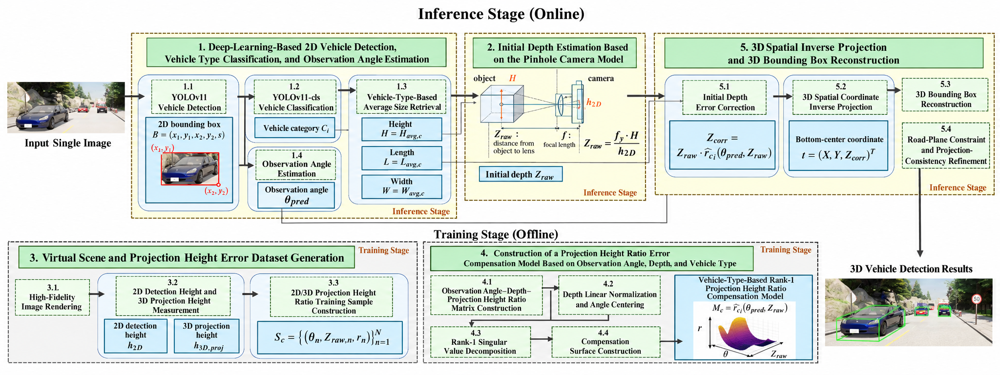
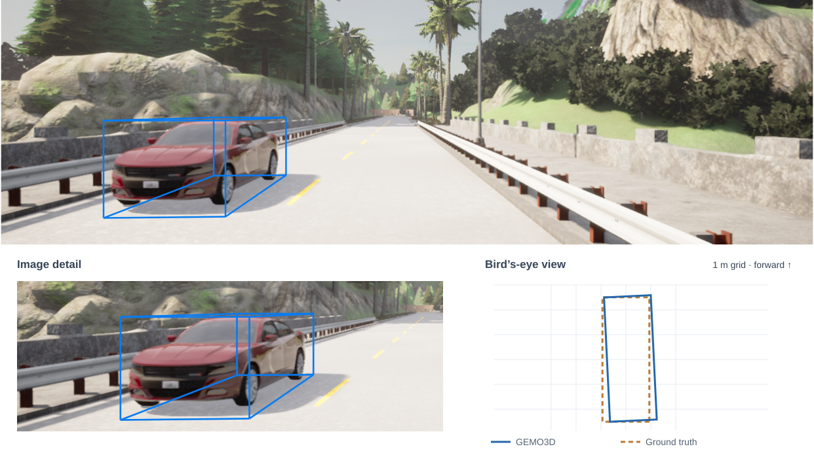
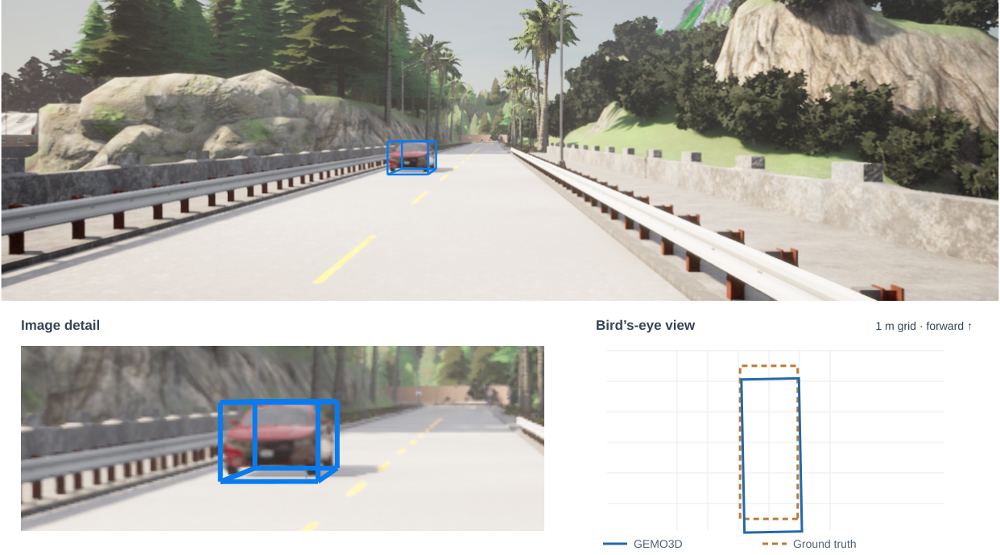

GEMO3D: Geometry-Enhanced Monocular Object Detection in 3D
 3D geometry2D detection
3D geometry2D detection

Abstract
Monocular 3D vehicle detection requires estimating object depth from a single image. The height of a detected 2D bounding box differs from the projected height of the vehicle’s 3D centerline, introducing a depth bias that varies with viewing angle and vehicle shape. GEMO3D combines learned vehicle detection, classification and orientation estimation with camera geometry to compensate for this discrepancy.
A vehicle-specific rank-1 model estimates the projection-height ratio from the viewing angle and initial pinhole depth. The corrected depth is used to reconstruct the 3D box, followed by ground-plane constraints and reprojection refinement. On 165 vehicle instances matched by all four evaluated methods in a CARLA sequence, GEMO3D achieves a mean 3D center error of 0.25 m and a mean BEV IoU of 0.82.
Method

YOLOv11 detects the vehicle and a classifier selects its dimension prior. Ego-Net estimates the viewing angle. Camera calibration and the detected box height provide an initial depth estimate; the height-ratio model then corrects this estimate before 3D reconstruction.
Projection-Height Ratio Compensation
Let H be the vehicle height, fy the vertical focal length, and h2D the detected box height. Initial and corrected depth are given by
The class-specific function r̂c approximates h2D / h3D,proj. It is fitted over viewing angle and depth using rank-1 SVD. Ground-truth depth is not required at inference.

Qualitative Results
Representative predictions from the local CARLA evaluation at approximately 10, 20 and 30 metres. Blue denotes the GEMO3D prediction; the bird’s-eye view compares it with the orange dashed ground truth.


Quantitative Results
Evaluation on 165 vehicle instances matched by GEMO3D, MonoAMNet, MonoDGP and MonoDETR. This comparison measures localization accuracy on matched objects.
| Method | Depth RMSE (m) ↓ | Yaw error (°) ↓ | 3D center error (m) ↓ | BEV IoU ↑ | FPS ↑ |
|---|---|---|---|---|---|
| MonoAMNet | 5.58 | 18.97 | 2.76 | 0.47 | 40.23 |
| MonoDGP | 1.41 | 1.24 | 1.26 | 0.47 | 24.71 |
| MonoDETR | 0.33 | 1.79 | 0.29 | 0.70 | 21.34 |
| GEMO3D | 0.27 | 2.12 | 0.25 | 0.82 | 31.12 |


Results grouped into 5 m depth bins. Error bars show the stored 95% confidence intervals of the mean.
Video
BibTeX
@misc{chang2026gemo3d,
title={GEMO3D：結合深度學習感知、相機幾何與投影高度比例補償之單目 3D 車輛偵測方法},
author={Chang, Yu-Chiao and Kuo, Chunghui and Yang, Chieh-Lun and Chang, Ing-Chau},
year={2026},
note={CVGIP 2026, SS09-08}
}